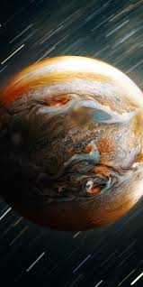

Юпитер
Юпитер — пятая планета от Солнца и крупнейшая в Солнечной системе. Её диаметр составляет около 139
820 километров, что делает Юпитер более чем в 11 раз шире Земли. Эта газовая гигантская планета
состоит в основном из водорода и гелия и не имеет твёрдой поверхности, а её плотность значительно
ниже, чем у земных планет.
Общая площадь поверхности Юпитера значительно больше Земной, но её невозможно точно измерить,
поскольку планета состоит из газа. Атмосфера Юпитера известна своими мощными штормами, в том числе
знаменитым Великим Красным Пятном — гигантским антициклоном, который бушует уже несколько сотен лет.
Юпитер окружён системой колец и более чем 70 спутниками, среди которых самый известный — Европа,
ледяная луна, которая, возможно, скрывает под собой океан.